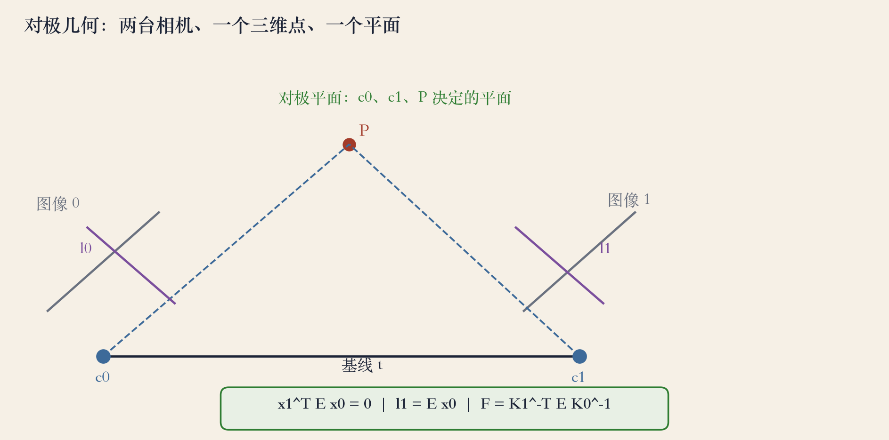
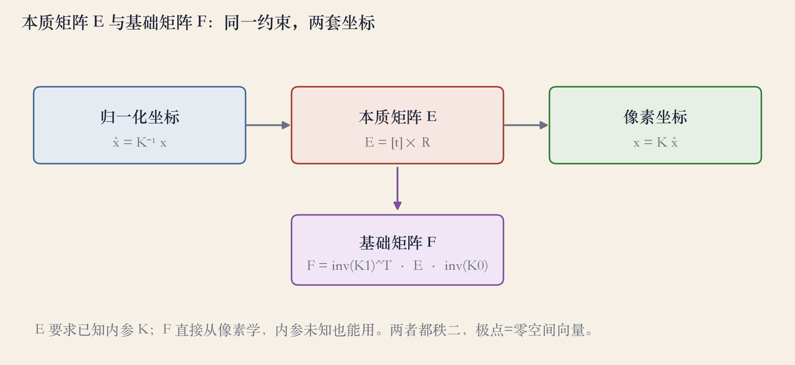
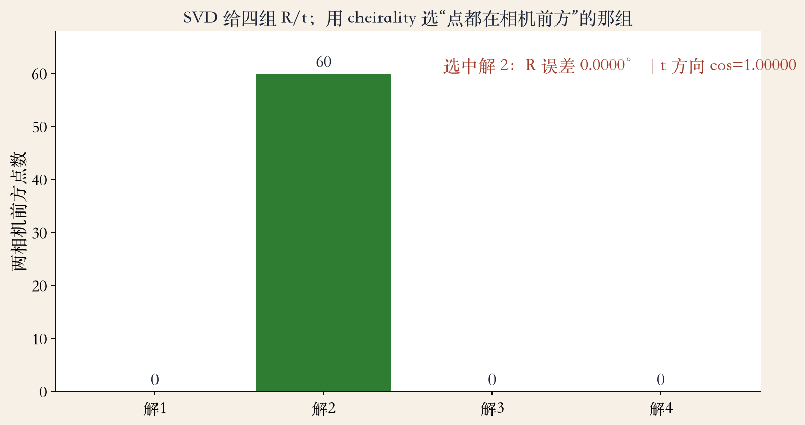

双视图 · 原书第 703 页
两台相机，能恢复什么
两台相机拍同一场景，只靠像素能恢复什么？
双视图 SFM：从对应点同时恢复三维结构和位姿。
视差里有一条硬约束：三维点与两个相机中心共面。
把共面写成代数，就是 E 和 F。
依据：原书第 703 页
本集三个对象
对极约束
本质矩阵 E
基础矩阵 F
正课第九十四集
01 / 14
对极几何 · 原书第 704 页
对极平面、极线和极点
三维点 P 和两个相机中心确定一个平面。
平面与两张图的交线，就是极线。
左图的点 x0，在右图只能落在 l1 上。
所有极线都穿过极点，极点是另一相机中心的投影。
依据：原书第 704 页

对极几何：共面→极线→极点；x1^T E x0=0｜程序生成，未用教材或论文原图
正课第九十四集
02 / 14
本质矩阵 · 原书第 704 页
E = [t]×R 与对极约束
归一化坐标 x0 = K^-1 x。
约束：x1^T E x0 = 0。
E 有 9 个元素，尺度任意，自由度 5。
单目双视图只恢复平移方向，不恢复绝对尺度。
依据：原书第 704 页
x1^T E x0 = 0
E = [t]×R；9 个元素、尺度任意；自由度 5（旋转 3 + 平移方向 2）；x0、x1 为归一化坐标
正课第九十四集
03 / 14
点变线 · 原书第 705 页
E 把点映射成极线
l1 = E x0，因为 x1^T l1 = 0。
极点 e1 是左零空间：E^T e1 = 0。
l0 = E^T x1，e0 是右零空间：E e0 = 0。
E 秩为 2，零空间方向就是平移 t 的方向。
依据：原书第 705 页
三个对象
点 x0、x1
极线 l0、l1
极点 e0、e1
正课第九十四集
04 / 14
SVD · 原书第 708 页
四组解，用 cheirality 选
E 和 t 只能确定到符号。
SVD 拆出 UΣVᵀ，U 的第三列是平移方向。
两个旋转候选乘正负平移，得到四组。
只有一组让所有三维点在两个相机前方。
依据：原书第 708 页
cheirality
点在相机前方
其他解把点翻到背后
没有它，相机可能看后脑勺
正课第九十四集
05 / 14
基础矩阵 · 原书第 710 页
F：不用内参的像素版约束
内参未知时，不能用 x0 = K^-1 x。
把 E 的约束换到像素坐标，得到 F。
F = K1^-T E K0^-1，不需要内参。
代价：F 分解是投影重建，不是直接 R/t。
依据：原书第 710–711 页
F = K1^-T E K0^-1
E 是标定版，F 是像素版；两者都秩二，极点都是零空间向量
正课第九十四集
06 / 14
F 的性质 · 原书第 711 页
F 里藏着极点和平面映射
F 的秩为 2。
最小左奇异向量是 e1，最小右奇异向量是 e0。
F 可分解为 [e]× 乘一个单应 H。
秩二给 7 个自由度，7 对点就够估。
依据：原书第 711 页

本质矩阵 E 与基础矩阵 F：内参已知/未知两套坐标｜程序生成，未用教材或论文原图
正课第九十四集
07 / 14
退化 · 原书第 710 页
纯旋转和主导平面
纯旋转没有视差，E 和 t 方向退化。
x0≈x1，方程秩不足，深度不可求。
主导平面：F 不唯一，先用单应解释平面。
工程上先检测退化，再估模型。
依据：原书第 710 页
两种退化
纯旋转 / 低视差
主导平面
先用单应，再用平面外点
正课第九十四集
08 / 14
数值 · 原书第 706 页
先归一化，再解八点方程
直接用像素坐标，乘积项会放大数值误差。
先平移到质心在原点，方差缩放到单位。
解完 E，再用 T 矩阵变回像素坐标。
流程：归一化→堆 A→SVD→秩二→反归一化。
依据：原书第 705–706 页
Hartley 归一化
质心移到原点
方差缩放到 1
几何对，数值不对，结果照样错
正课第九十四集
09 / 14
三角化 · 原书第 708 页
三角化要检查三件事
有了 R/t 和对应点，两条视线相交就是三维点。
交点要在两个相机前方，深度不能为负。
视差不能太小，否则深度对噪声极敏感。
单目双视图没有绝对尺度。
依据：原书第 708 页
尺度从哪来
已知物体
IMU
第二传感器
正课第九十四集
10 / 14
实战 · RANSAC
真实数据里先对付外点
真实对应点里，常有成百上千个外点。
RANSAC 反复采样最小点集，估 E 或 F。
用极线距离和 cheirality 打分。
最后用全部内点做非线性精化。
依据：原书第 705–708 页；本集实验
有内参用 E，没有用 F
EXIF / 标定：用 E
没有内参：用 F
阈值按像素噪声设
正课第九十四集
11 / 14
实验 · 60 个合成三维点
机器精度与 cheirality 选解
极线残差 8.33e-17，E 的行列式 9.78e-19。
极线到对应点距离 1.08e-16。
R 误差 0.0000°，t 方向余弦 1.000000。
四组解前方点数 0、60、0、0，选中第 2 组。
依据：本集实验

cheirality 选解：四组前方点数 0/60/0/0｜程序生成，未用教材或论文原图
正课第九十四集
12 / 14
失败边界 · 诊断清单
先看数据，再调参数
纯旋转或低视差：E 退化，深度不可求。
主导平面：F 不唯一，先用单应。
内参错、外点太多、符号选错，都会失败。
诊断看极线、内点率、cheirality、三角化深度。
依据：原书第 705–711 页
异常先回退
极线挤在一侧：极点太近或基线太小
内点率突降：查重复纹理、反光、动态物体
先看数据质量，再调算法参数
正课第九十四集
13 / 14
收束 · 下一集八点法
双视图几何收束
对极约束把两相机位姿和三维结构绑在一起。
E 是标定版，F 是像素版，二者都秩二。
SVD 给四组解，cheirality 选唯一。
下一集：把 x1^T F x0 = 0 堆成线性方程。
依据：原书第 703–711 页
三句话
对极约束绑住两视图
E 标定，F 像素
四解用 cheirality 选
正课第九十四集
14 / 14